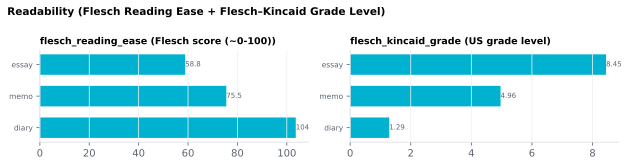

6.2.4Readability (Flesch Reading Ease + Flesch–Kincaid Grade Level)
Two classical readability indices computed over the full transcript.
6.2.4.1What it is
Two classical readability indices computed over the full transcript:
| Column | Formula (English) | Range | Interpretation |
|---|---|---|---|
flesch_reading_ease |
206.835 − 1.015·(words/sentence) − 84.6·(syllables/word) |
typically 0–100 | Higher = easier. 60–70 ≈ plain English; below 30 ≈ academic / legal. |
flesch_kincaid_grade |
0.39·(words/sentence) + 11.8·(syllables/word) − 15.59 |
typically 0–18 | US grade level required to comprehend the text. 8 ≈ 8th grade. |
The two metrics are derived from the same two predictors (sentence length, syllables per word) but combine them with different coefficients to put one on a "ease" scale and the other on a "grade level" scale — see Kincaid 1975 for the derivation history.
6.2.4.2See it

6.2.4.3In your output
| stimulus_id | flesch_reading_ease | flesch_kincaid_grade |
|---|---|---|
| LJ002-0321 | 67.76 | 6.79 |
| LJ003-0007 | 59.07 | 8.747 |
| LJ005-0063 | 53.55 | 12.25 |
| LJ005-0066 | 57.23 | 11.98 |
| LJ019-0027 | 57.18 | 8.265 |
| predictable | 102 | 0.5167 |
| surprising | 73.85 | 4.45 |
6.2.4.4MATLAB
% Load the document-level table (one row per stimulus)
T = readtable('document/documents_summary_<timestamp>.csv', 'TextType', 'string');
T.Properties.VariableNames % every column in the file
T(1:10, {'stimulus_id', 'flesch_reading_ease', 'flesch_kincaid_grade'}) % this feature's columns
% Plot
barh(T.flesch_reading_ease); yticks(1:height(T)); yticklabels(T.stimulus_id); xlabel('flesch_reading_ease')
6.2.4.5In the code
Computed in sensi/pipeline.py's document-batch finishing step using the
textstat package, which implements both formulas as defined in
Kincaid 1975 / Flesch 1948. Syllable counts use the same
pyphen machinery as the syllable extractor,
so the two are internally consistent.
6.2.4.6Library
import textstat
textstat.flesch_reading_ease(text) # 0-100, higher = easier
textstat.flesch_kincaid_grade(text) # US grade level
6.2.4.7EEG rationale
Readability indices are passage-level numbers combining sentence length and syllables-per-word into a single scale. Both ingredients are established correlates of reading time: longer sentences and longer / more-polysyllabic words produce longer eye fixations (Just 1980). The Flesch and Flesch–Kincaid scores are typically used as a single-number covariate for matching stimuli on overall text difficulty (e.g. educational or developmental designs).
The Flesch family is not the most sensitive difficulty measure
available — MTLD and the
Edu_Zipf_* family carry more information — but it's the
most-cited and most-comparable across studies because everyone has it.
6.2.4.8Papers
- Flesch 1948 Flesch. A new readability yardstick. J. Applied Psychology. doi:10.1037/h0057532 — original Flesch Reading Ease.
- Kincaid 1975 Kincaid, Fishburne, Rogers, Chissom. Derivation of new readability formulas (Automated Readability Index, Fog Count, and Flesch Reading Ease formula) for Navy enlisted personnel. Naval Air Station Memphis. — Flesch–Kincaid Grade Level.
- Just 1980 Just & Carpenter. A theory of reading: From eye fixations to comprehension. Psychological Review 87(4), 329–354. doi:10.1037/0033-295X.87.4.329 — eye-fixation model showing readers pause longer at points of higher processing load (infrequent words, clause boundaries, sentence-end inferences).